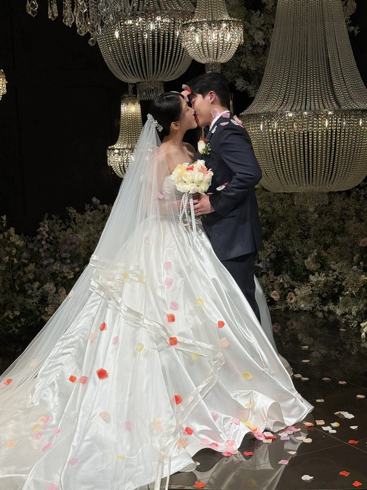
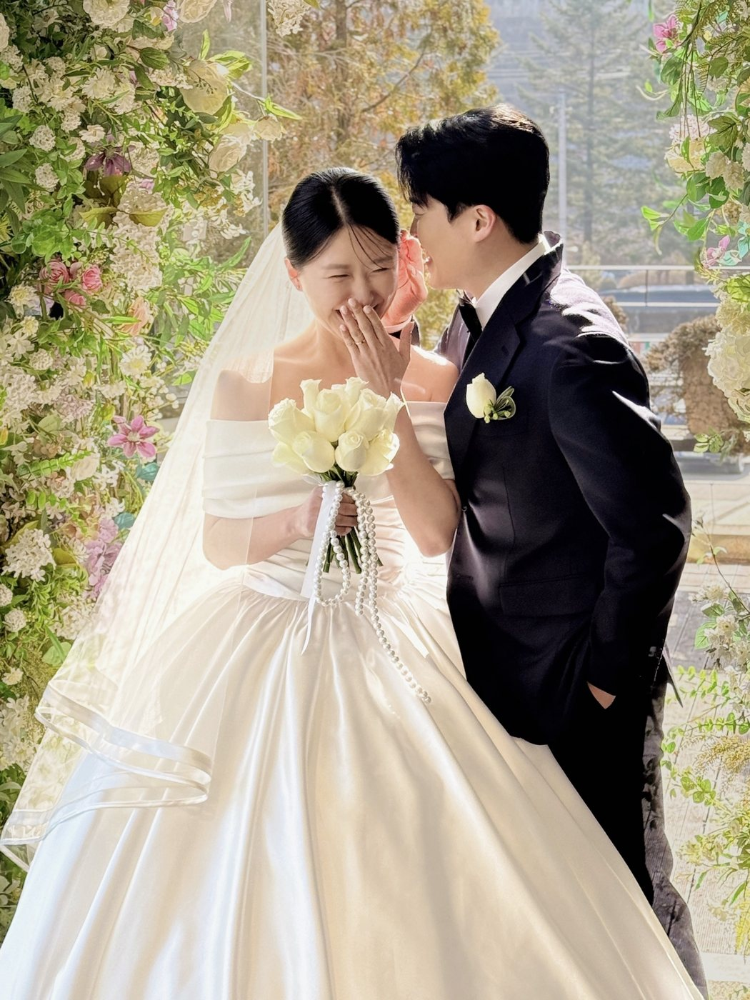
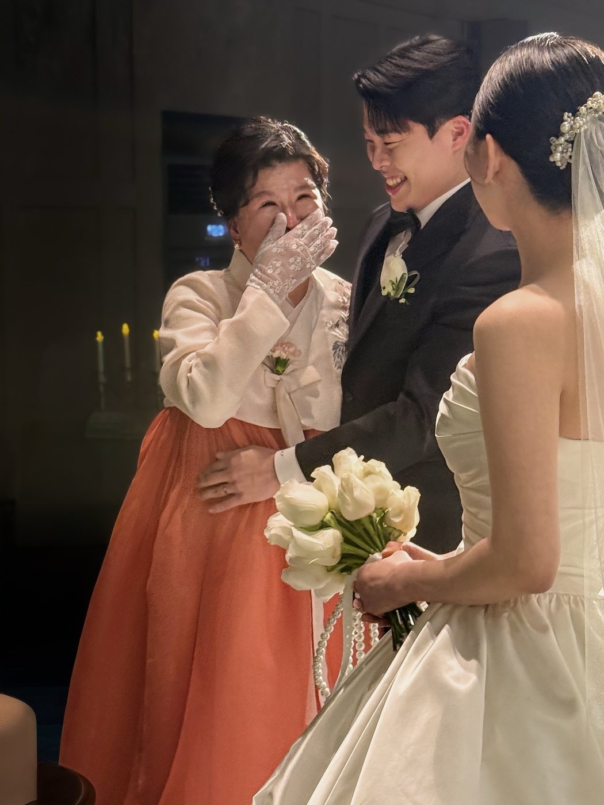
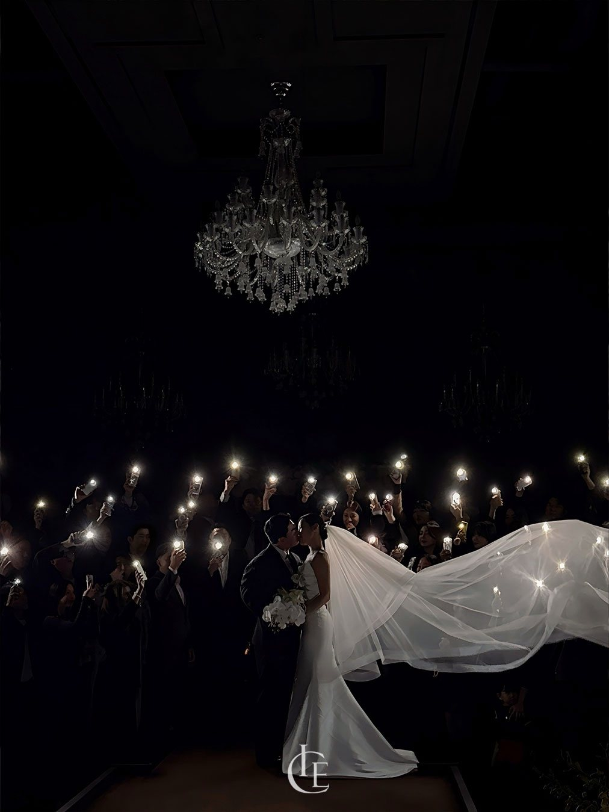

Wedding Snap본식 스냅
예식 전 신부대기실부터 본식, 원판 촬영과 퇴장까지. 하객의 시선에 끼어들지 않는 거리에서 그날의 표정과 분위기를 담습니다.
- 신부대기실 · 본식 · 원판 · 퇴장
- 당일 현장 무빙 촬영
- 하객 · 가족 스냅 포함
아이스스냅은 아이폰 하나로 결혼식과 야외에서의 순간을 담는 스냅 스튜디오입니다. 큰 장비 대신 손안의 카메라를 들고, 두 사람의 눈높이에서, 조금 물러나 있는 대신 오래 바라봅니다.
준비된 포즈보다 저절로 나오는 표정을, 완벽한 빛보다 그날의 공기를 찍습니다. 몇 년 뒤에 열어봐도 그날의 소리가 들리는 사진. 그게 아이스스냅이 생각하는 좋은 스냅입니다.
Reopening Soon · 재오픈 준비 중 · 사전 상담 가능
샹들리에와 촛불, 하객들의 휴대폰 플래시가 만들어내는 어두운 예식장의 빛. 아이폰은 그 빛 속에서도 조용히, 그리고 꽤 강하게 찍습니다.




식전 신부대기실부터 본식, 원판·퇴장까지 — 하객의 시선에 끼어들지 않는 거리에서 담습니다.
53 frames · 2025
본식 · 야외 · 스튜디오 · 돌스냅 촬영본 중 일부입니다. 모든 사진은 아이폰으로 촬영했고, 보정 후에도 그날의 빛과 공기를 남겨두었습니다.
결혼식장에서, 바깥에서, 그리고 아기의 첫 생일에서. 같은 아이폰, 같은 시선으로 담습니다.
예식 전 신부대기실부터 본식, 원판 촬영과 퇴장까지. 하객의 시선에 끼어들지 않는 거리에서 그날의 표정과 분위기를 담습니다.
바닷가, 들판, 억새밭, 골목. 빛과 계절이 가장 좋은 시간에 맞춰 두 사람의 이야기를 천천히 찍습니다. 본식과 함께, 또는 따로.
돌잔치의 아기와 가족, 돌상과 돌잡이 순간. 엄마 아빠가 기억하고 싶은 그 장면을, 최대한 방해하지 않고 담습니다.
더 많은 돌스냅 기록과 예약 소식은 전용 계정 @ice__snap.bebe에서 확인하실 수 있어요.
모든 일정과 비용은 상담 후 확정됩니다. 아직 공개되지 않은 금액·컷수·보정 일정은 재오픈 시 안내드립니다.
인스타그램 DM 또는 카카오톡 오픈채팅으로 희망 날짜와 장소, 촬영 종류를 알려주세요. 아래 문의 양식을 쓰면 문장이 자동으로 만들어집니다.
가능한 일정과 진행 방식을 안내드리고, 예약금 안내 후 일정을 확정합니다.
예식장이나 약속한 장소에서, 가능한 한 자연스럽게. 포즈보다 대화를 먼저 합니다.
촬영본을 정리해 전달드립니다. 보정 컷수와 전달 일정은 재오픈 시 정확히 안내드립니다.
인스타그램 @ice__snap DM 또는 카카오톡 오픈채팅으로 문의 주시면 됩니다. 희망 날짜와 예식장(또는 장소), 촬영 종류를 함께 알려주시면 더 빠르게 답장드릴 수 있어요.
아이폰 한 대로 촬영합니다. 큰 조명과 장비를 세우지 않기 때문에 예식의 흐름을 방해하지 않고, 하객들 사이에서도 자연스럽게 이동할 수 있습니다. 현장에 따라 작은 보조 조명을 사용하기도 합니다.
촬영본은 정리 후 전달드리며, 보정 컷수와 전달 방식·일정은 재오픈 시 확정해서 안내드립니다. 정확한 조건은 상담 시 말씀드리겠습니다.
괜찮습니다. 정해진 자리에서만 움직이고, 다른 업체의 촬영을 가리지 않도록 조율합니다. 가능하면 예식 전에 담당자분께 미리 인사드립니다.
원하시는 장소가 있으면 그곳에서, 없으면 계절과 시간대에 맞춰 몇 곳을 추천드립니다. 이동 시간과 빛의 방향까지 고려해서 동선을 잡습니다.
네, 진행합니다. 위 포트폴리오의 Dol 탭에서 실제 돌스냅 촬영본을 보실 수 있고, 더 많은 돌스냅 사진과 문의 안내는 전용 계정 @ice__snap.bebe에서 확인하실 수 있습니다.
현재는 재오픈을 준비하며 잠시 쉬어가는 중입니다. 재오픈 일정과 예약 오픈은 인스타그램에서 가장 먼저 안내드립니다. 미리 문의를 남겨주시면 오픈 시 순서대로 연락드리겠습니다.
아래 내용을 채우면 문의 문장이 자동으로 만들어집니다. 복사해서 인스타그램 DM이나 카카오톡 오픈채팅으로 보내주세요. 확인하는 대로 답장드립니다.